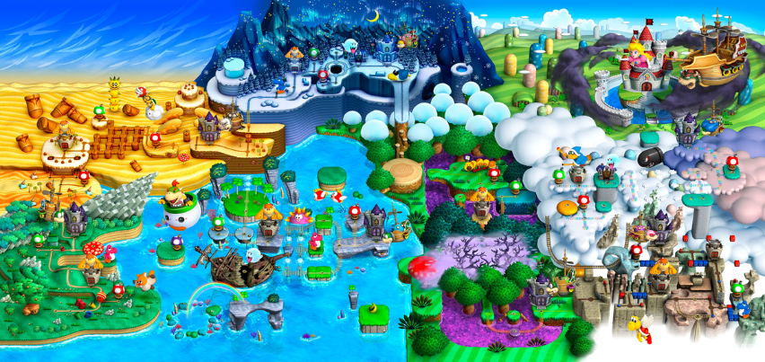
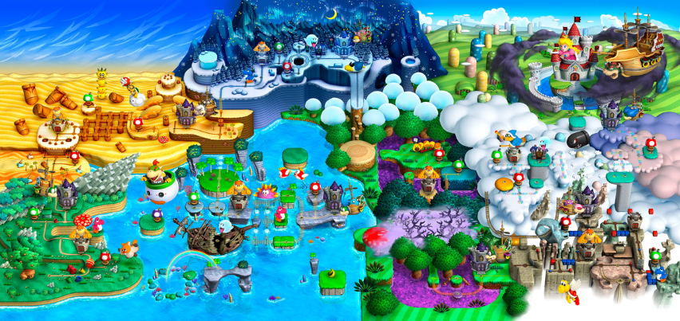
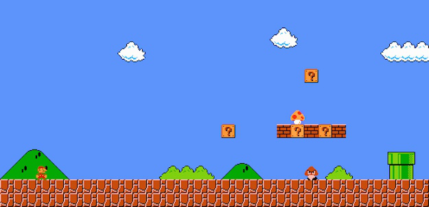
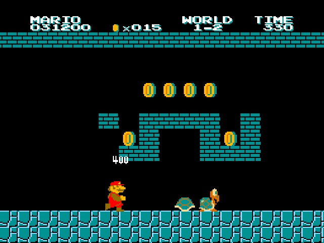
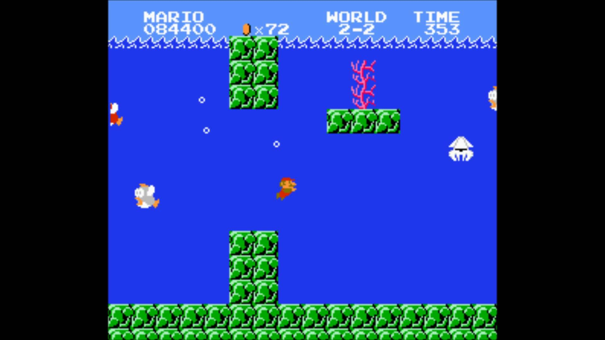
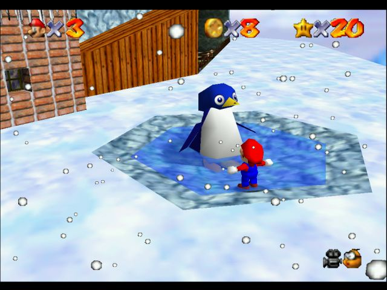
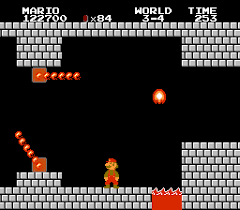

Locations
Click on the panels below to reveal an insight into some of the various locations throughout the world.
From then until now.
The Mario world map has evolved a lot since the games inception from an 8-bit black and white map to a vibrant colorful 3D map. Despite this the type of terrain has remained pretty consistent. From the older style on top to the modern below
 

The Overworld
The majority of marios adventures take place in the overworld and has looked pretty consistent throughout.
The Underworld
The underground ground levels are prevailent throughout all the mario games and should be quite familiar as this site is based off them!
Water
From time to time Mario is plunged into an underwater level where he is usally very vunerable.
Deserts
The Desert Land first arrived in the second world of Super Mario Bros 3 and brought with it a whole host of new enemies and tricky terrain.

Ice
Super Mario Bros 3 also brought up the Ice Land world in world 6. Another tricky hazardous terrain and enemies as well as friendly penguins, who are known to lose their chicks.
Castles
Castles are throughout the entire series and come at the end of a given world. They are full of haunted enemies and dangerous lava. They have a boss fight at the end and King Bowser resides in the final Castle of the Final world.
